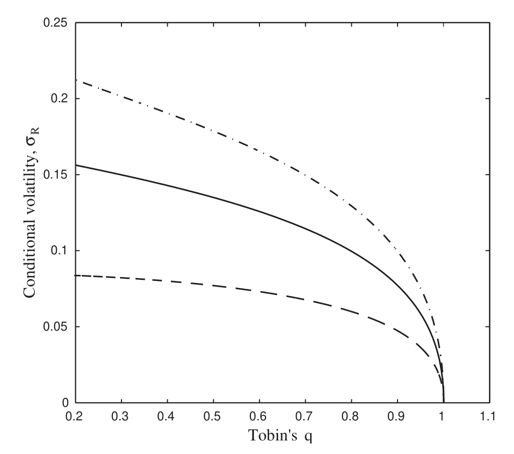
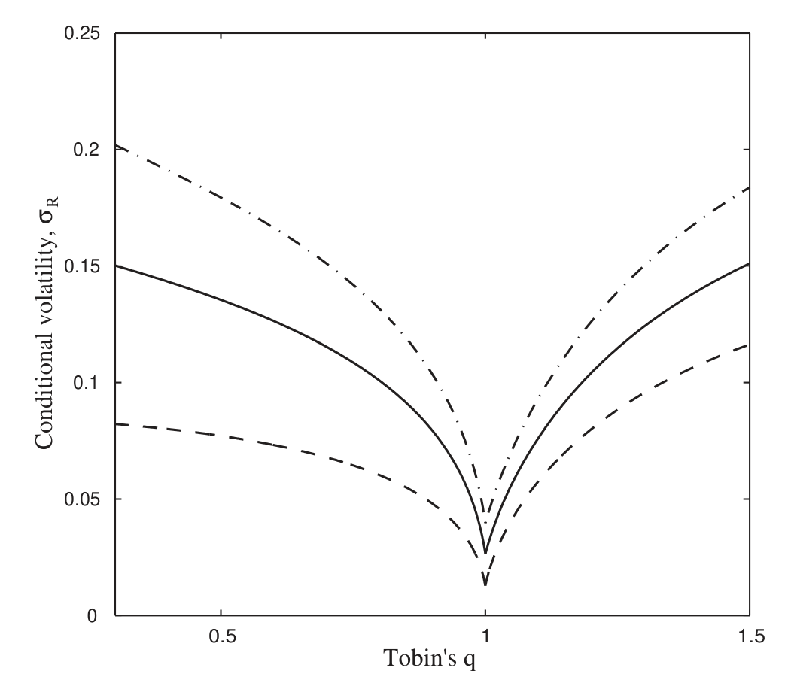
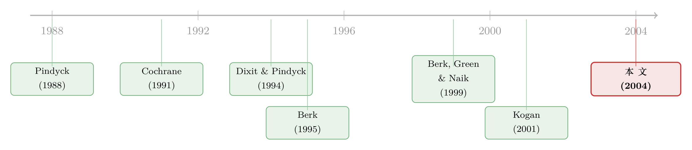

供给会「变软」的那一刻：不可逆投资如何写出股票的波动节律
本文读的是 Kogan (2004, Journal of Financial Economics)：在一个生产经济的一般均衡里，把「投资不可逆 + 投资率有上界」这两道摩擦写进资本积累，就能让股票收益的条件波动率与系统性风险，随市净率（Tobin's q）呈现一条非线性的曲线——q 很低或很高时波动高，中间低。换句话说，股价的「脾气」是被实体经济这一侧的「供给弹性」拧出来的。
1 一个被用滥了、却没人讲清的事实
先抛一个几乎人人都默认、却很少有人追问的事实。
打开任何一篇做横截面收益预测的论文，你都会看到同一批变量反复出现：公司的投资率、Tobin's q，或者它的经验替身——市净率（market-to-book ratio）。它们似乎天生就「知道」股票未来会怎么走。可一旦你认真去看这些关系的形状，麻烦就来了：它有时是负的，有时是正的，线性回归里那个系数像在跟你捉迷藏。于是大家退而求其次，加点非线性项、分个组、做个分位数，把问题盖过去。
但一个自然的问题是：为什么 q 和收益的关系会变号？是数据噪声，还是背后真有一台机器，在某些时候把这关系往一个方向推、在另一些时候又往反方向推？
主流的回答，习惯把答案放在「风险」这一侧——假设某个风险溢价外生地随时间变动，然后让它去解释一切。Kogan (2004) 偏不。他把目光转向实体经济的供给侧：企业的投资行为本身——尤其是投资「能不能反悔、能多快推进」——就足以内生地决定股票收益的动态性质。这篇论文真正想讲的，是一句听上去朴素、做起来不易的话：
当资本的供给弹性会随经济状态变化时，股价的波动率与系统性风险，就必然随状态变化——而 q，恰好是这个状态的「充分统计量」。
围绕这一个核心，我们把全文走一遍。
2 核心直觉：一根会「变软」的供给曲线
要理解这台机器，先忘掉所有公式，只记住一个画面。
设想一个行业，它的资本是专用的：钱一旦投进去变成机器厂房，就很难再撤出来折现——这就是不可逆性（irreversibility）。Dixit and Pindyck (1994) 早把这件事讲透了：新资本是行业专属的，原始投资做完之后能回收的价值微乎其微。
现在，给这个行业一个正向的需求冲击。市场出清只有两条路：要么供给增加（企业赶紧投资、上产能），要么价格上涨（资本的市场价值被顶上去）。到底走哪条，取决于此刻供给「软不软」：
- 当 q 已经接近 1、企业正打算投资时——只要价格稍微一涨，企业就会追加投资把供给补上。供给是有弹性的，于是 q 对冲击不敏感，价格波动小。条件波动率低，系统性风险低，预期收益低。
- 当 q 远小于 1 时——企业既不愿投资（不划算），又因为不可逆而无法撤资。供给被死死卡住，毫无弹性，所有冲击只能由价格来吸收。于是 q 对市场冲击高度敏感。条件波动率高，系统性风险高，预期收益高。
接着，一个更妙的反转出现了。Kogan 又加上第二道摩擦：投资率有上界——资本不能瞬间无限速地堆上去（这其实是标准凸调整成本的一个特例）。这道约束在 q 很高的时候开始咬人：需求旺到企业想拼命投资，却被「一天只能投这么多」卡住，供给在上方又一次变得不可弹。于是波动率在高 q 一端重新抬头。
把两端拼起来，你就得到了那条标志性的曲线：条件波动率是 q 的「U 形」（或者说两端高、中间低）函数。论文摘要里那句拗口的话——「低 q（高 q）时，条件波动率与预期收益和市净率负向（正向）相关」——讲的就是这条曲线的左半边和右半边。
这也顺手解释了为什么线性回归会「捉迷藏」：你拿一条直线去拟合一个 U 形，系数当然会随样本期所处的区间而变号。
（关于把「实物期权 + 不可逆投资」装进一般均衡这一思路，亦可参见《竞争越激烈，反而越要「等」？——把实物期权和竞争装进同一个均衡》。）
3 模型：把直觉变成方程
直觉再漂亮，也得有一台能推导的引擎。Kogan 的引擎来自他自己的 Kogan (2001)，是一个两部门生产经济。下面我们把最关键的几步显式地走一遍。
3.1 设定
经济里有两个部门，各有自己的资本与产品。
第一部门规模报酬不变，是「经济的大头」，可以把它想成那个投资近乎完全可逆的世界：一单位资本在 \(dt\) 内变成 \(1+\alpha\,dt+\sigma\,dW_t\) 单位产出。它的资本存量演化为
$$dK_{1,t} = (\alpha K_{1,t} - c_{1,t})\,dt + \sigma K_{1,t}\,dW_t - dI_t,\qquad dI_t \ge 0.$$
这里 \(c_{1,t}\) 是第一种消费品的消费率，\(dI_t\) 是从第一部门「搬运」到第二部门的投资流。注意那个 \(dI_t \ge 0\)——这就是不可逆性：资本只能从第一部门流向第二部门，不能倒回来。
第二部门是我们真正关心的「那个受约束的行业」。它的资本只增不可逆地累积，并按 \(\delta\) 折旧：
$$dK_{2,t} = -\delta K_{2,t}\,dt + dI_t.$$
第二部门产出 \(c_{2,t} = X K_{2,t}\)（不失一般性令 \(X=1\)），技术被假定为无风险——这样两个部门的风险水平天然不同，跨部门比较才有意义。在完整版模型里，投资率还要再受一道上界约束 \(dI_t/dt \in [0,\ i_{\max}K_{2,t}]\)，这正是前面说的「第二道摩擦」。
家庭在两种消费品上取 CRRA 效用，最大化
$$E\!\left[\int_0^{\infty} e^{-\rho t}\left(\frac{1}{1-\gamma}c_{1,t}^{\,1-\gamma} + \frac{b}{1-\gamma}c_{2,t}^{\,1-\gamma}\right)dt\right].$$
其中 \(\gamma\) 是相对风险厌恶，\(\rho\) 是时间偏好率，\(b\) 是第二种产品在效用里的权重。关键的简化假设是 \(b\) 足够小：第二部门相对整个经济很小，于是均衡价格可以用 \(b\) 的渐近展开求出显式近似——这就是「把一个小行业嵌进大经济」的技术含义。
整个经济的状态，可以浓缩进单一状态变量
$$X_t \equiv b^{-1/\gamma}\,\frac{K_{2,t}}{K_{1,t}},\qquad x_t \equiv \ln X_t,$$
也就是两部门资本的相对规模。投资只在 \(X_t\) 跌到某个临界值 \(X^{*}\) 时才发生，并恰好把 \(X_t\) 顶住、不让它跌破 \(X^{*}\)。
3.2 关键一步：收益的分解
现在来看这篇论文的「心脏」。一家第二部门企业的市值是它的 q 乘以重置成本：\(P_t = q_t K_{2,t}\)。在一个 \(dt\) 内，股东拿到的累计收益可以拆成
$$\frac{\pi_t\,dt + q_t\,dK_{2,t} + K_{2,t}\,dq_t - dI_t}{P_t} = \frac{\pi_t\,dt}{P_t} + \frac{dK_{2,t}}{K_{2,t}} + \frac{dq_t}{q_t} - \frac{dI_t}{q_t K_{2,t}}.$$
这是论文的式 (6)，\(\pi_t\) 是产品销售带来的现金流率。代入第二部门资本演化 \(dK_{2,t} = -\delta K_{2,t}\,dt + dI_t\)，并利用一个核心事实——竞争性企业只在 \(q_t=1\) 时才投资（否则只要 \(q\ge1\) 就会以无限速投资，市场无法出清，所以均衡中永远 \(q_t\le1\)）——那两个含 \(dI_t\) 的项恰好抵消，式 (6) 干净地塌缩成：
整篇论文的所有戏剧性，都压在第二项 \(dq_t/q_t\) 上。如果投资完全可逆，资本的市场价值会永远等于重置成本，\(q\equiv1\)，这一项消失——这正是第一部门的情形，波动率恒定、平淡无奇。正因为第二部门不可逆，\(q\) 才能偏离 1，而且它对冲击的敏感度会随状态变化，整条收益的波动结构才随之起伏。
3.3 为什么斜率恰好为零
还有一个看似技术、却很优雅的结论：在投资临界点上，不仅 \(q(x^{*})=1\)，而且
$$q'(x^{*}) = 0.$$
直觉是这样的：\(q\) 在均衡中不能超过 1，所以在 \(x^{*}\) 右侧它顶多等于 1，斜率不可能为正。假设 \(q'(x^{*})<0\)，那么一个刚好在 \(x^{*}\) 投资的企业，预期 \(q\) 不会再涨（已经是 1），可一旦 \(x\) 在下一刻下滑，市值就会因 \(q'(x^{*})<0\) 而下跌；在极短时间里，累计利润只是 \(\Delta t\) 量级，而资本利得/损失却是 \(\sqrt{\Delta t}\) 量级——后者必然压倒前者。于是企业根本不会选择在 \(x^{*}\) 投资，矛盾。所以只能 \(q'(x^{*})=0\)。
这一步的妙处在于：它说明即便投资率有限（无法瞬时调整），\(q\) 在 \(x^{*}\) 附近的「上行空间」也被钉住，于是 \(q\) 的可变性、进而条件波动率，对于 \(q<1\) 的区间总是与 \(q\) 负向相关。而且这个论证不依赖单因子结构——哪怕状态由多个变量驱动，结论照旧。
4 模型的画像：两张图讲完全部
把上面的均衡数值求解出来，画成图，故事就一目了然。
在只有不可逆性的基本模型里，条件波动率 \(s\) 是状态变量的单调函数：状态越差、\(q\) 越低，供给越不可弹，波动率越高（如图 1）。

Figure 1: Conditional volatilityof stock returns. s denotes the conditionalvolatility of stockreturns of
而一旦加上投资率上界，曲线的另一半也立起来了：当 \(q\) 高到企业撞上投资速度的天花板，供给在上方再次失去弹性，条件波动率在高 q 一端重新抬升（如图 4）。两张图拼在一起，就是那条「两端高、中间低」的非线性曲线——也是全文最想让你记住的形状。

Figure 4: Conditional volatility of stock returns, bounded investment rate. s denotes the conditional
值得强调的是：在这个模型里，系统性 beta 渐近正比于条件波动率，而条件预期收益又渐近正比于 beta。所以关于条件波动率的所有结论，原则上都能平移到预期收益上。但 Kogan 也很诚实地提醒：波动率的性质主要由投资摩擦的结构决定，稳健；而预期收益的结论，还额外依赖一串简化假设，脆弱。这个伏笔，到了实证就兑现了。
5 实证：一半的胜利
模型给了一个清晰可证伪的预言：行业层面，条件波动率应当与 q（市净率）和投资率呈非线性关系——低 q 段负相关、高 q 段正相关。
Kogan 用行业组合（industry portfolios）来检验，把条件波动率对市净率、投资率做时间序列建模（论文的模型 (12)，估计结果见 Table 1）。结论是一句教科书式的「一半的胜利」：
条件波动率这一侧，数据支持模型预言的非线性形状；但预期收益这一侧，数据并不配合。
这恰好印证了 §4 末尾埋的伏笔——波动率的机制是结构性的、稳健的；预期收益则被太多简化假设（无生产成本、技术无风险等）绑着，一碰实证就松动。对一个理论驱动的工作来说，这是相当负责任的报告方式：它没有把不利的一半藏起来。
（关于「投资基础资产定价模型一到逐年对账就露馅」这个更普遍的张力，可参见《一个「成功」的模型，为什么经不起逐年对账？》。）
6 文献脉络
把这条线索从头捋一遍，你会更清楚这篇论文站在哪里。
最上游，是不可逆投资 / 实物期权这条实体经济的传统：Pindyck (1988) 谈不可逆投资与产能选择，Caballero (1991)、Abel and Eberly (1994) 研究不确定性与投资的关系，最后由 Dixit and Pindyck (1994) 集大成。但这些大多是局部均衡，把产出价格或需求冲击的波动率当作外生，做的是比较静态。

接着，资产定价这边开始追问：公司特征为什么能预测收益？Cochrane (1991, 1996) 从生产侧的一阶条件出发，把股票收益和投资收益挂钩。Berk (1995) 指出市净率与预期收益之间有一种机械关系（因为两者定义里都含股价），但他的模型是静态的，说不出时变背后的经济机制。Berk, Green and Naik (1999) 则显式地建模公司的实体活动，把风险与公司特征联系起来——可正如作者自己承认的，他们的局部均衡模型忽略了企业活动对市场价格的均衡反馈。
而这恰恰是 Kogan 的发力点。他接过 Kogan (2001) 那台两部门一般均衡引擎，让资本供给内生、其弹性随经济状态变化，于是市场价格的均衡反馈不再被忽略，反而成了驱动一切的核心力量。几乎同时，Gomes, Kogan and Zhang (2001) 在一般均衡里追踪横截面，Zhang (2004)、Cooper (2004)、Carlson et al. (2004) 则各自用投资模型去解释价值溢价——不过后几篇大多走「经营杠杆」的路子，而 Kogan 这篇明确不靠经营杠杆（模型里压根没有生产成本），走的是「投资摩擦 → 供给弹性 → 价格波动」这条独立的暗线。
7 评论与延伸（Q&A + 研究方向）
(a) 几个可能的疑问
Q：均衡里 \(q\) 永远不超过 1，那「高 q 正相关」从何谈起？
在只有不可逆性的基本模型里，确实 \(q_t\le1\)，曲线只有左半边。「高 q 段」需要第二道摩擦——投资率上界——才会出现：当需求旺到企业撞上投资速度天花板，供给在上方再次失弹，波动率回升。所以那半条曲线是凸调整成本（而非单纯不可逆）的产物。
Q：这跟 Berk (1995) 的「机械关系」到底差在哪？
Berk 的关系是静态、机械的：因为市净率和预期收益的定义里都含股价，两者天然相关，但他说不出时变的经济机制，还得对现金流与预期收益的横截面相关性强加假设。Kogan 给的是一个动态、内生的机制——q 的信息含量来自它是经济状态的充分统计量，而时变来自供给弹性，无需外生假设。
Q：为什么用行业组合，而不是个股来检验？
因为模型刻画的是一个受投资约束的行业：不可逆性、供给弹性这些概念在行业（产能）层面才干净。个股层面会混入大量异质性与公司特定噪声，反而模糊了「供给弹性随状态变化」这个总量机制。
Q：关键词里的「杠杆效应（leverage effect）」是财务杠杆吗？
不是。这里没有债务。它指的是 Black (1976) 式的「价格跌→波动升」的负相关，但在本文里是内生的：状态变差、\(q\) 降低时供给变得不可弹，价格既下跌又更易波动。是投资摩擦「伪装」成了杠杆效应，而非资产负债表上的杠杆。
Q：条件波动率支持、预期收益不支持，这对模型是不是致命？
算不上致命，但确实是个诚实的软肋。论文自己点明：波动率的结论由投资摩擦的结构决定，稳健；预期收益的结论依赖「技术无风险、无生产成本」等简化假设，脆弱。所以「一半胜利」其实是模型内部逻辑的预期结果，而非意外翻车。
Q：「\(b\) 足够小」这个假设，会不会把结论限制在无关紧要的小行业上？
渐近解（显式价格表达式）确实只在第二部门很小时成立；但论文强调，定性性质——企业投资最优性与市场出清——并不依赖这个假设，因而更一般。换句话说，「小行业」是为了拿到漂亮的闭式近似，机制本身适用范围更广。
(b) 几个可能的研究问题与提案
1. 把「供给弹性」机制搬进公司债。 【经济故事】不可逆性让股票波动率随 q 起伏；那么同一个行业的信用利差的条件波动率，是否也在低 q（产能过剩、撤不出来）时更高？毕竟违约风险本质上是企业价值的看跌期权，而企业价值的波动正是本文的主角。 【可行性】中。需要 TRACE 的公司债成交 + Compustat 的投资/q，按行业聚合估条件波动率。识别上要把信用利差里的流动性成分剥掉（这本身是个老大难）。
2. 不可逆投资与债券流动性的「状态依赖」。 【经济故事】当行业产能锁死、供给不可弹时，坏消息只能由价格吸收——这个机制对二级市场流动性是否同样成立？即低 q 行业的债券，在压力期是否流动性更脆弱？ 【可行性】中。可用行业层面的资本沉没度（资产专用性代理）+ 危机期（如 2020 年 3 月）的债券流动性指标做横截面。识别靠行业间「专用性」的外生差异，但代理变量的质量是软肋。
3. 外资持有人与受约束行业的波动率。 【经济故事】若某行业的边际定价者是供给弹性敏感的外资，他们在低 q 期的「逃跑」会不会放大本文预言的波动率非线性？这是把「供给弹性」机制与「需求侧持有人结构」拼在一起。 【可行性】中偏低。需要行业层面的外资持股 + 投资约束代理。识别困难：外资持股本身内生于行业前景，需要一个对持股的外生冲击（如指数纳入）。
4. 用现代数值方法补上异质性与信用风险。 【经济故事】Zhang (2004) 已经证明，把厂层特质冲击 + 数值方法塞进调整成本模型，能定量解释价值溢价。沿这条路，能否在 Kogan 的供给弹性框架里同时内生出股票波动率非线性与信用利差动态？ 【可行性】高（纯理论/数值）。引擎和文献都现成，挑战在于把无风险技术的假设松开、引入违约后，闭式直觉还能不能保住。
8 参考文献
我的总体判断：这篇论文最漂亮的地方，是把一个看似纯实证的谜题（q 与收益关系为何变号）还原成一个供给侧的均衡现象——它不靠外生的时变风险溢价，而是让资本供给的弹性自己随状态呼吸，从而内生出条件波动率的非线性。式 (6)→(7) 的塌缩干净利落，\(q'(x^{*})=0\) 的论证优雅，机制的稳健性（不依赖因子个数、不依赖经营杠杆）也讲得很清楚。
对识别的担忧也很实在：预期收益一侧的失败说明，从「波动率机制」到「收益机制」之间还隔着一层依赖强假设的桥；技术无风险、无生产成本这些设定，让模型在预期收益上失去了纪律。我接下来最想看到的，是把这套供给弹性逻辑搬到信用市场——那里的「期权性」更显性，违约本就是企业价值的看跌期权，本文的机制或许能在债券波动率与利差动态上，找到比股票预期收益更扎实的证据。
- Abel, A., Eberly, J. (1994). A unified model of investment under uncertainty. American Economic Review 84, 1369–1384.
- Berk, J. (1995). A critique of size related anomalies. Review of Financial Studies 8, 275–286.
- Berk, J., Green, R., Naik, V. (1999). Optimal investment, growth options, and security returns. Journal of Finance 54, 1153–1607.
- Black, F. (1976). Studies of stock price volatility changes. Proceedings of the 1976 Meetings of the Business and Economics Statistics Section, American Statistical Association, 177–181.
- Caballero, R. (1991). On the sign of the investment-uncertainty relationship. American Economic Review 81, 279–288.
- Carlson, M., Fisher, A., Giammarino, R. (2004). Corporate investment and asset price dynamics: implications for the cross-section of returns. Journal of Finance, forthcoming.
- Cochrane, J. (1991). Production-based asset pricing and the link between stock returns and economic fluctuations. Journal of Finance 46, 209–237.
- Cochrane, J. (1996). A cross-sectional test of an investment-based asset pricing model. Journal of Political Economy 104, 572–621.
- Cooper, I. (2004). Asset pricing implications of non-convex adjustment costs and irreversibility of investment. Norwegian School of Management (BI), working paper.
- Dixit, A., Pindyck, R. (1994). Investment under Uncertainty. Princeton University Press, Princeton, NJ.
- Gomes, J., Kogan, L., Zhang, L. (2001). An equilibrium model of irreversible investment. Journal of Political Economy 111, 693–732.
- Kogan, L. (2001). An equilibrium model of irreversible investment. Journal of Financial Economics 62, 201–245.
- Kogan, L. (2004). Asset prices and real investment. Journal of Financial Economics 73(2), 411–431.
- Leahy, J., Whited, T. (1996). The effect of uncertainty on investment: some stylized facts. Journal of Money, Credit and Banking 28, 64–83.
- Pindyck, R. (1988). Irreversible investment, capacity choice, and the value of the firm. American Economic Review 83, 273–277.
- Zhang, L. (2004). The value premium. Journal of Finance, forthcoming.